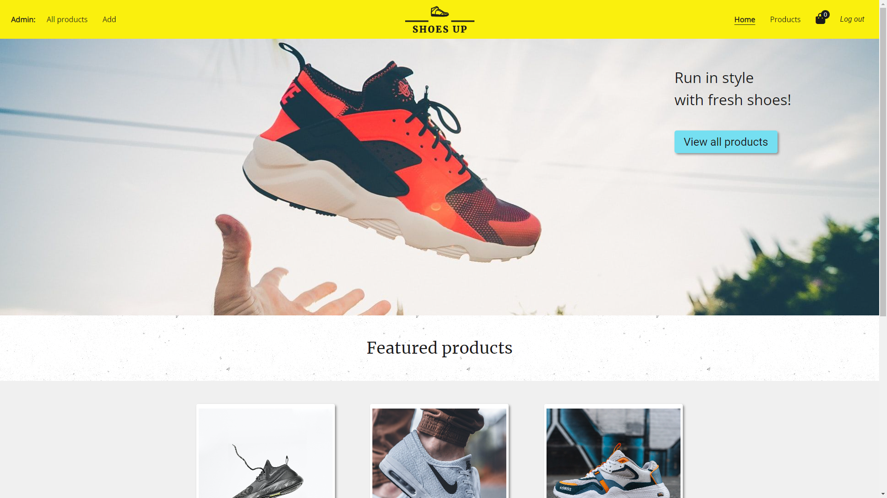
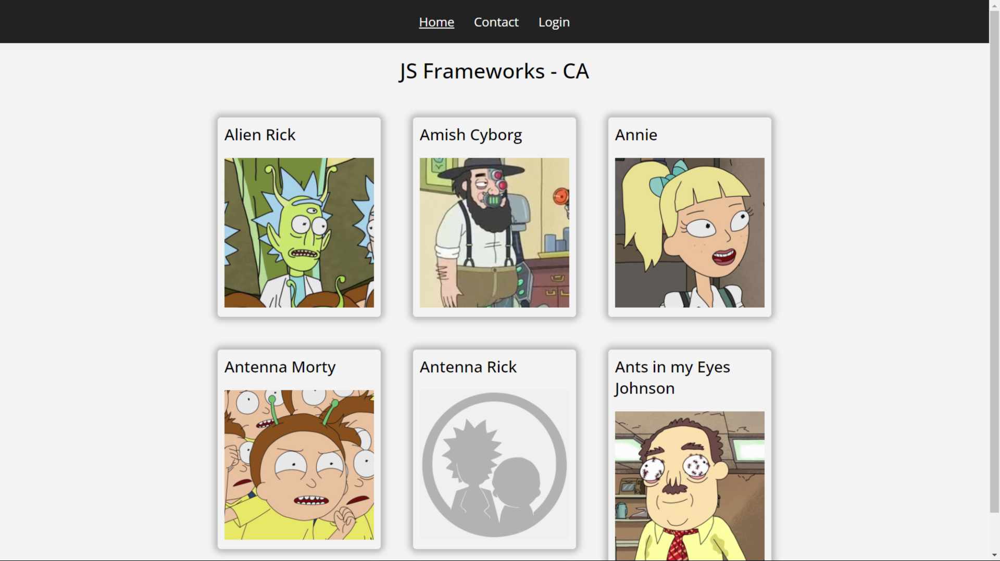
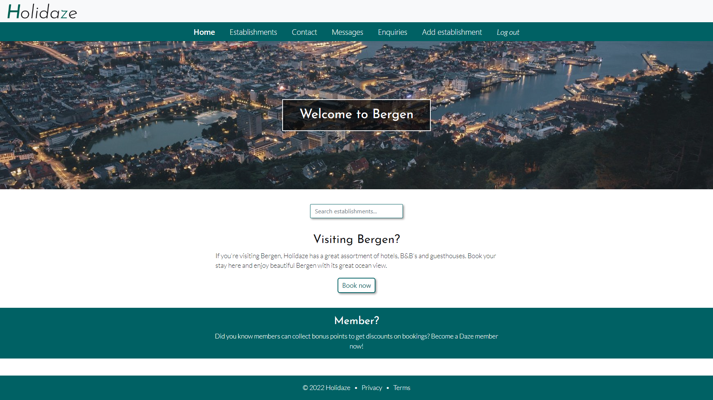

Lilleberg's Portfolio
~ Portfolio 2 ~
Shoes Up
~ Semester Project 2 ~
 View GitHub repoShoes Up was created for the course Semester Project 2. It's an e-commerce site selling shoes. This site is built with HTML, JavaScript, Bootstrap and Sass, and Strapi is used for the backend.
The functionalities of this site consists of viewing products as well as being able to add them to a shopping cart. There is an admin part, where admin can sign in (using JWT for this). If signed in, admin has access to adding, editing and deleting products.
JS Frameworks CA
~ JS Frameworks Course Assignment ~
 View GitHub repoThe JS Frameworks CA was to test our React skills, such as doing API calls, setting up React Router, using localStorage to save JWT for login functionality. The project also has a contact form which uses react hook form and yup for form and input validation. The login form also makes use of this. When signed in, admin gets access to the /admin path.
To build this site I have used React and CSS. Strapi is used for the backend for the login functionality.
The project is split into several smaller components, which makes the code more readable and easier to navigate. I have also created reusable components where it is practical, like for navigation and headings (this is something we have been taught to do).
Holidaze
~ Project Exam 2 ~
 View GitHub repo View live siteHolidaze, aka Project Exam 2, is the result of two years studying front-end. The brief was to create a website where users can book hotels, B&B's and guesthouses in the Bergen area. As well as sending booking enquiries to an establishment, users can also send in a contact form to Holidaze. There is also an admin part to the assignment where an admin can sign in to view booking enquiries, contact messages and add a new establishment. The homepage has a search bar typeahead which links to the establishment you click on in the dropdown menu.
To build this website I have used React, Bootstrap and Sass. Strapi is used for the API's, and is hosted on Heroku. For forms I have used react hook form and yup validation. For the API calls I have used axios, except for when adding a new establishment as axios and FormData wouldn't work together - fetch worked fine though. The search bar typeahead is from an NPM package. I have also used another NPM package, helmet, for setting title and meta description on the pages.